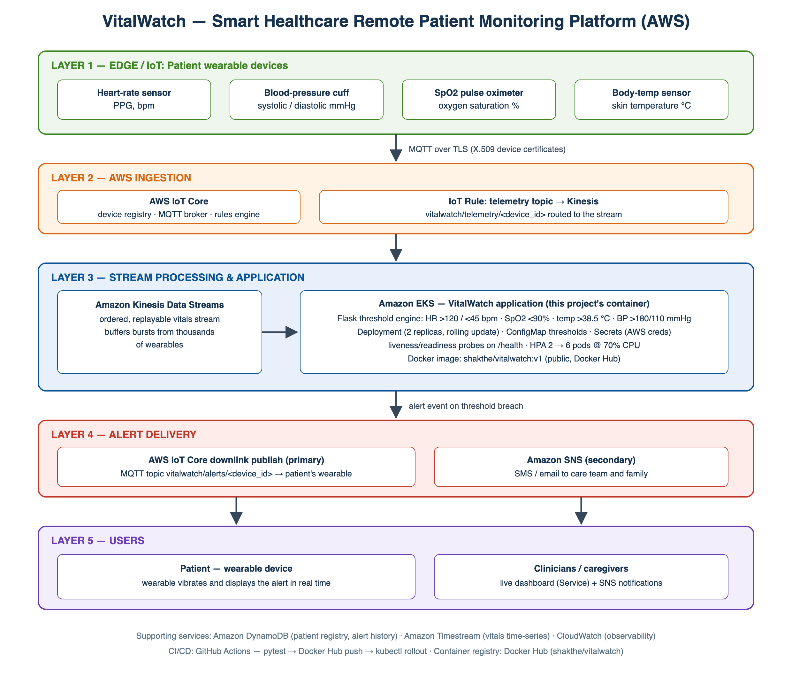
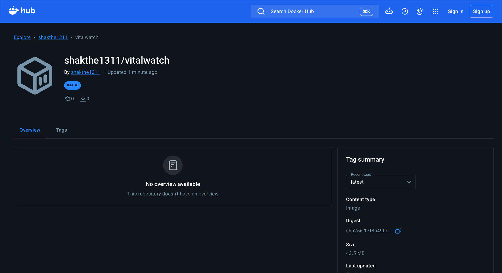
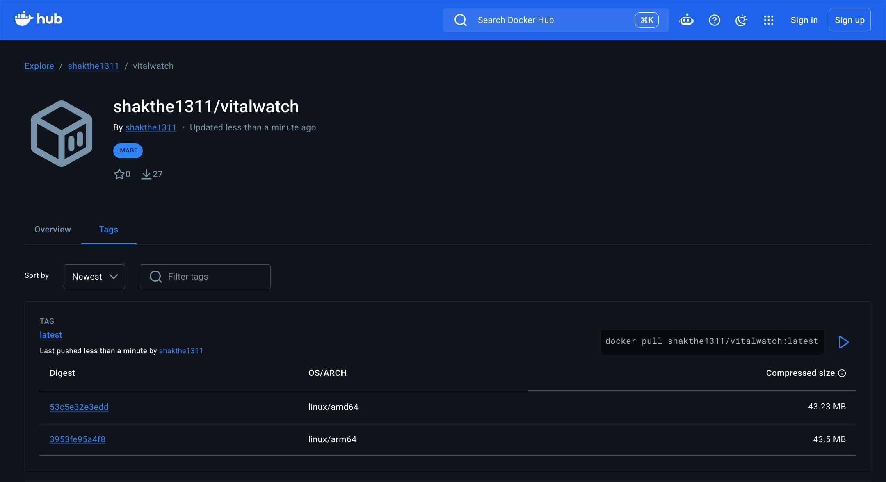
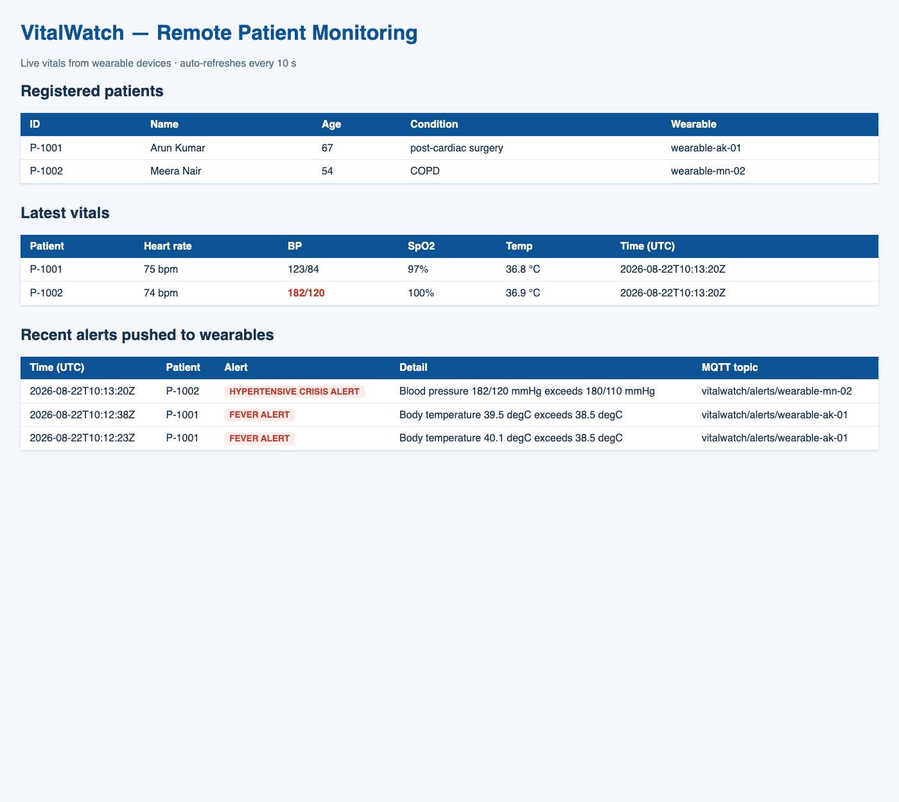
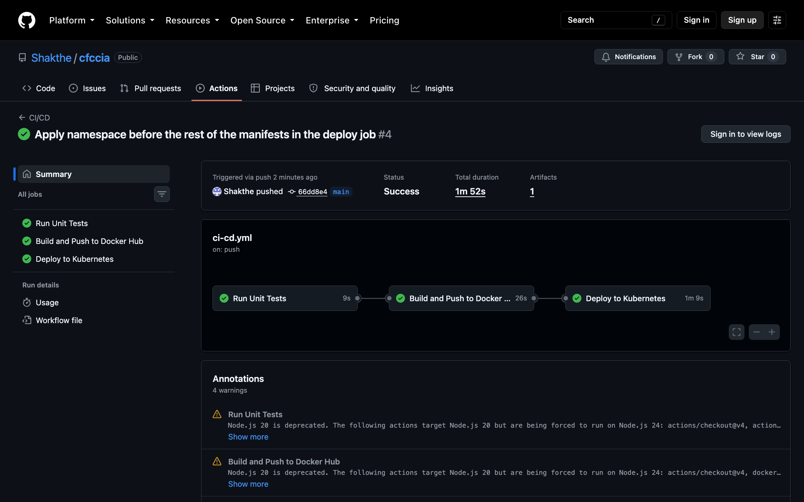

I named my system VitalWatch. The idea is simple: a patient wears a device that keeps measuring heart rate, blood pressure, oxygen level (SpO2) and body temperature. These readings go to the cloud, where my application checks them. If any reading crosses a danger limit, the system sends an alert straight back to the same wearable device, so the patient knows something is wrong right away.
I built the cloud side on Amazon Web Services (AWS). The full path of the data, from the sensors to the alert on the patient's wrist, has five layers, shown below.

Figure 1.1 — VitalWatch architecture on AWS, from wearable sensors to the alert on the patient's wearable
| Layer | What is there | What it does |
|---|---|---|
| 1 — Edge / IoT | Sensors on the wearable: heart rate, blood pressure, SpO2, body temperature | Keeps measuring the patient's vital signs and sends them out |
| 2 — AWS Ingestion | AWS IoT Core | Every wearable connects here over MQTT with its own certificate. An IoT Rule picks up the readings from the topic vitalwatch/telemetry/<device_id> and passes them on |
| 3 — Processing & App | Amazon Kinesis + Amazon EKS running my container | Kinesis holds the incoming stream of readings. My Flask app (running on Kubernetes) checks each reading against the limits: heart rate above 120 or below 45 bpm, SpO2 below 90%, temperature above 38.5 °C, BP above 180/110 mmHg |
| 4 — Alert Delivery | AWS IoT Core publish (main path) and Amazon SNS (extra path) | When a limit is crossed, the app publishes the alert to that patient's own topic vitalwatch/alerts/<device_id>, which the wearable listens to. SNS can also inform doctors/family by SMS or email |
| 5 — Users | The patient's wearable, plus doctors and caregivers | The wearable vibrates and shows the alert to the patient. Doctors can watch everything on a live dashboard |
For storage, DynamoDB would keep the patient list and old alerts, Timestream would keep the history of readings, and CloudWatch would watch the health of the system itself.
The application itself is a Python Flask service (app/app.py). Since I do not have real medical wearables, the app generates realistic readings for each registered patient (with occasional bad readings mixed in on purpose), checks every reading against the danger limits (app/alerts.py), and publishes an alert to the patient's wearable topic whenever a limit is crossed. If no real AWS IoT endpoint is given, the publish is written to the logs instead, so everything can be tested without an AWS account.
FROM python:3.12-slim
ENV PYTHONDONTWRITEBYTECODE=1 \
PYTHONUNBUFFERED=1
WORKDIR /srv/vitalwatch
COPY requirements.txt .
RUN pip install --no-cache-dir -r requirements.txt
COPY app ./app
RUN useradd --create-home vitalwatch
USER vitalwatch
EXPOSE 5000
HEALTHCHECK --interval=30s --timeout=5s --retries=3 \
CMD python -c "import urllib.request,sys; \
sys.exit(0 if urllib.request.urlopen('http://localhost:5000/health').status==200 else 1)"
CMD ["gunicorn", "--workers", "2", "--bind", "0.0.0.0:5000", "app.app:app"]
Why I wrote it this way:
python:3.12-slim as the base because it is a much smaller download than the full Python image. My final image came to 213 MB, so Kubernetes can pull it quickly, and a smaller image also means fewer things inside it that could have security holes..pyc files and make it print logs immediately, so I can see the alerts live with docker logs or kubectl logs.requirements.txt and install packages before copying my code. Docker caches each step, so when I only change my code, it does not reinstall all the packages again — rebuilds finish in a few seconds.vitalwatch and switched to it. The app never runs as root inside the container, which is safer./health endpoint. If the app stops answering, Docker and Kubernetes can see the container is unhealthy and restart it on their own.I added a .dockerignore file so that tests, the git folder, the Kubernetes files, this report and cache files do not get copied into the image. The image only carries what the app actually needs.
I built the image with two tags: v1 (fixed version) and latest (always the newest). The final . tells Docker to use the current folder as the build context.
__FIG21__
Figure 2.1 — docker build finishing all 11 steps and tagging the image as v1 and latest
Before pushing anything, I ran the image on my machine. -d runs it in the background and -p 5001:5000 connects port 5001 on my laptop to port 5000 inside the container.
__FIG22__
Figure 2.2 — the container running locally; /health answers "healthy" and docker ps shows the built-in healthcheck passing
I checked that /health answered properly, that I could register a new patient through the API, and that alerts were generated and sent to the wearable topic from inside the container.
docker login -u shakthe1311 docker buildx build --platform linux/amd64,linux/arm64 \ -t shakthe1311/vitalwatch:v1 -t shakthe1311/vitalwatch:latest --push .
I pushed the image with buildx for two CPU types (amd64 and arm64), so the same image works on normal cloud servers as well as ARM machines. Anyone can now pull it with docker pull shakthe1311/vitalwatch:v1 — no login needed, the repository is public.

Figure 2.3 — the public Docker Hub repository shakthe1311/vitalwatch

Figure 2.4 — the Tags page of the repository with the pull command
Nothing in the image is tied to my laptop. All settings (limits, intervals, AWS endpoint) come from environment variables. So the exact image from Docker Hub runs as-is under Kubernetes — k8s/deployment.yaml simply says image: shakthe1311/vitalwatch:v1, and the CI/CD pipeline (Section 4) deploys the same image into a cluster on every push.
All the Kubernetes files are in the k8s/ folder of the repo. They pull the same public image from Docker Hub and run it:
| Resource | File | What it is for |
|---|---|---|
| Namespace | namespace.yaml | Puts everything of this project in its own space called vitalwatch, away from other apps in the cluster |
| ConfigMap | configmap.yaml | Holds the danger limits and the monitoring interval. I can change a limit and restart the pods — no need to rebuild the image |
| Secret | secret.yaml | Holds the AWS IoT endpoint and keys. In my demo these are empty, so the app just logs the wearable pushes instead of really sending them |
| Deployment | deployment.yaml | Runs 2 copies (replicas) of the container. Updates roll out one pod at a time so the service never goes fully down. Liveness and readiness probes keep hitting /health; a stuck pod gets restarted automatically |
| Service | service.yaml | Gives the pods one stable address. I used NodePort 30090 for my local cluster; on EKS this would just become type LoadBalancer |
| HPA | service.yaml | Autoscaler — if average CPU goes above 70%, it grows from 2 pods up to 6, and shrinks back later |
I tested all of this on a local cluster made with kind. These are the commands I ran:
kind create cluster --name vitalwatch kind load docker-image shakthe1311/vitalwatch:v1 --name vitalwatch kubectl apply -f k8s/namespace.yaml kubectl apply -f k8s/ kubectl rollout status deployment/vitalwatch -n vitalwatch
$ kubectl get all -n vitalwatch __FIG31__
Figure 3.1 — kubectl get all: both pods Running, the NodePort service, the Deployment with 2/2 ready, and the autoscaler set for 2 to 6 pods
I forwarded the Service to port 8080 on my machine and called the API running inside the cluster:
__FIG32__
Figure 3.2 — GET /patients answered by the pods inside the cluster, listing the registered patients
__FIG33__
Figure 3.3 — POST /vitals/refresh forces one monitoring round. Here the SpO2 came out at 85%, which is under the 90% limit, so a LOW SPO2 ALERT was created and sent to that patient's wearable topic

Figure 3.4 — the dashboard served from the cluster: patients, their latest vitals (bad values in red), and the last alerts that went to the wearables
The pod logs show the same thing from the inside — the moment a reading crosses a limit, an alert goes out to that exact patient's wearable topic. In my demo the MQTT publish is simulated and logged; if a real AWS IoT endpoint is put into the Secret, the very same code does the real publish.
__FIG35__
Figure 3.5 — pod logs with FEVER, TACHYCARDIA and LOW SPO2 alerts going to each patient's own wearable topic
The pipeline lives in .github/workflows/ci-cd.yml. GitHub Actions runs it by itself on every push (and pull request) to main. It has three jobs, and each one only starts if the one before it passed:
| Job | What it does |
|---|---|
| Run Unit Tests | Installs the packages and runs my 8 pytest tests. If even one test fails, nothing else runs — a broken image can never get published. |
| Build and Push to Docker Hub | Logs in to Docker Hub with the repository secrets (DOCKERHUB_USERNAME, DOCKERHUB_TOKEN) and pushes the image with the tags latest, v1 and the commit id, plus labels saying which commit it was built from. |
| Deploy to Kubernetes | Starts a fresh Kubernetes cluster right inside the GitHub runner (using kind), loads the newly built image, applies all my k8s/ files, waits for the rollout to finish, and finally runs a small curl pod that calls /health through the cluster Service to prove the deployed app answers. |
The two Docker Hub secrets are added in the repo under Settings → Secrets and variables → Actions. Below is a real run of the pipeline — all three jobs finished green in 1m 52s:

Figure 4.1 — GitHub Actions run #4 with all three jobs (tests, build & push, deploy) successful
| Choice | Reason |
|---|---|
| AWS | The main reason is AWS IoT Core. It gives every wearable its own certificate, handles MQTT at any scale, and most importantly it can publish back down to a device. That downlink is exactly how my alert reaches the patient's wearable, which is the core requirement of this question. Kinesis absorbs the flood of readings, EKS runs my container, and SNS covers the doctors/family messages. |
| Python + Flask | Small, quick to write, and easy for anyone to read. Perfect size for this kind of service. |
| gunicorn | A proper WSGI server that runs several workers, so more than one request can be served at a time. Flask's own server is only for development. |
| Docker (slim base) | A 213 MB image that pulls fast, runs as a non-root user and checks its own health. One image, same behaviour everywhere. |
| Kubernetes | For a patient monitor, downtime is not acceptable. Kubernetes restarts dead pods on its own, runs 2+ copies, updates them one by one with zero downtime, and keeps settings and secrets outside the image. |
| GitHub Actions | It is already part of GitHub, free for public repos, and the whole pipeline sits in one YAML file in the repo where anyone (including the evaluator) can read it. |
vitalwatch/alerts/<device_id>, and the app publishes the alert exactly there. This is the requirement of Question 2, and it is the main path of the design, not an afterthought.alerts.evaluate() just takes a reading and returns alerts. Today the readings come from my simulator; tomorrow they can come from real IoT Core telemetry, and the alert code does not change at all.VitalWatch covers the complete journey asked for in Question 2. Vital signs (heart rate, blood pressure, SpO2, body temperature) are collected non-stop for every registered patient, each reading is checked against clear medical limits, and the moment something is wrong the alert is pushed to that patient's own wearable device, with doctors and family covered through SNS as a second channel. The app is packed into a Docker image that anyone can pull from Docker Hub (shakthe1311/vitalwatch:v1), it runs on Kubernetes with health probes, two replicas, autoscaling and zero-downtime updates, and every push to GitHub is tested, built, published and deployed automatically by the Actions pipeline. Since the design sits on managed AWS services (IoT Core, Kinesis, EKS, SNS, DynamoDB), the same architecture would carry over to a real hospital deployment.